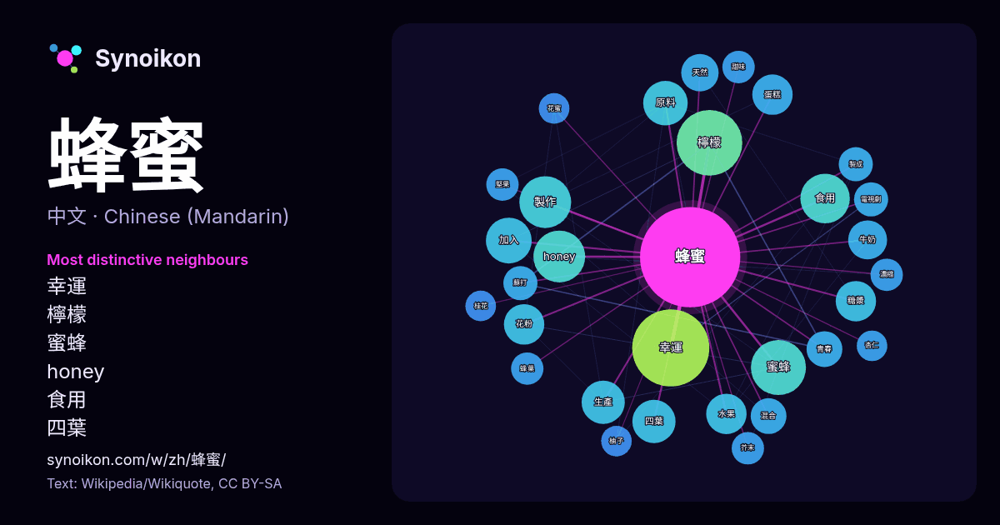

中文 · 每日一词列表
蜂蜜
“honey” · 来自维基百科, Wikiquote 802 次出现中其周围的词。

最具特色的邻近词
- 幸運 49×
- 檸檬 37×
- 蜜蜂 26×
- honey 24×
- 食用 19×
- 四葉 17×
- 原料 17×
- 糖漿 15×
- 花粉 15×
- 蛋糕 15×
- 水果 14×
- 製作 14×
- 牛奶 13×
- 生產 12×
- 天然 11×
- 青春 11×
- 蘇打 11×
- 製成 10×
- 芥末 9.9×
- 堅果 9.9×
× = 比维基百科普通文本中多出的倍数。
最常见的邻近词
- 幸運 51
- 檸檬 37
- 蜜蜂 26
- honey 23
- 製作 23
- 食用 21
- 加入 18
- 包括 17
- 原料 17
- 四葉 16
- 生產 16
- 使用 15
- 水果 14
- 糖漿 14
- 花粉 14
- 蛋糕 14
- 主要 13
- 牛奶 13
- 天然 12
- 混合 11
上下文
- 蜂蜜中的厭氧菌也沒有在人體內繁殖的危險。尚未封蓋熟成且未經濃縮處理的蜂蜜，因水分含量偏高，室溫下會快速發酵變質，因此仍需放入冰箱低溫保存。 天然封蓋熟成的蜂蜜在歐美國家稱作「生蜂蜜」（raw honey）；經過加熱濃縮處理的蜂蜜為「熟蜂蜜」或“巴氏蜂蜜”（pasteurized Wikipedia snippets · 蜂蜜
- 蜂蜜顏色更濃，並時而帶褐紅色、具特殊香芬、甜度較一般蜂蜜高，波美度通常為40度以上，含水量極低，遇低溫易結晶。在紐西蘭若需使用「麦卢卡蜂蜜」名稱為標籤，其蜂蜜需具70%以上麦卢卡花粉含量。 在傳統醫療中，蜂蜜為修復潰瘍和褥瘡的抗菌物，及燒傷和創傷造成的其他感染治療；研究顯示蜂蜜 Wikipedia snippets · 麥蘆卡蜂蜜
- 蜂蜜酒（英文：Mead），是一種利用蜂蜜釀成的酒。蜂蜜中加水稀释，制作过程简单。酒精度通常在4%到20%之间。制作过程涉及蜂蜜、水和发酵剂，可以添加其他调味品，如水果、香料等，以赋予酒更丰富的口感和风味。蜂蜜中含有极高的糖分，其高渗透压使微生物难以繁殖。通过将蜂蜜 Wikipedia snippets · 蜂蜜酒
- 哈基米是2023年开始在中文互联网流行的网络用语，原本是日语“蜂蜜”（日語：蜂蜜／はちみつ，羅馬化：Hachimitsu）的空耳，后来被用于称呼猫或者其他可爱的事物。该词也作为音MAD素材，被大量用作短视频平台猫咪视频的背景音乐。 “哈基米”一词原来出自日本Cygames的跨媒体企划《赛马娘 Pretty Wikipedia snippets · 哈基米 (网络用语)
- 《蜂蜜的針》是一部中国大陆电影，由袁梅監製兼導演，李樯担任编剧，於2026年3月28日上映。電影情節改編自德國偵探小說家英格麗特·諾爾（英语：Ingrid Noll）的作品《公雞已死》（Der Hahn ist tot）。2016年6月电影以原名《沒有別的愛》宣布即将开拍后，即因中国大陆民众对男主角 Wikipedia snippets · 蜂蜜的针
- 《蜂蜜與四葉草》（日語：ハチミツとクローバー），羽海野千花创作的日本漫畫作品，後來被改編成電視動畫與電影。蜂蜜幸運草也獲得第27屆講談社漫畫賞少女部門的最佳作品。獲選為2005年第九屆日本新媒體動漫藝術節動畫部門推薦的作品。 本作品在三本漫畫雜誌上連載，分別是寶島社的CUTiE、集英社的YOUNG Wikipedia snippets · 蜂蜜與四葉草
- 《蜂蜜幸運草》（英語：Honey & Clover），改編自日本漫畫家羽海野千花的同名漫畫作品《ハチミツとクローバー》（香港譯名：蜂蜜與四葉草，台灣譯名：蜂蜜幸運草）；該作品率先翻拍為電影《蜂蜜幸運草》，2007年5月11日於台灣上映；爾後2008年1月由日本富士電視台翻拍為同名電視劇《蜂蜜 Wikipedia snippets · 蜂蜜幸運草 (台灣電視劇)
- 台北市市長選舉，為了救世，不捨眾生之苦，所以政見之一為推廣蜂蜜檸檬。翌日，吳蕚洋接受訪問，現場調製蜂蜜檸檬，並示範蜂蜜檸檬標準喝法。 2018年11月10日，吳蕚洋在公視舉辦的台北市市長辯論會上推廣蜂蜜檸檬，承諾當選市長之後，會提供大量蜂蜜檸檬供市民飲用，並稱身體保持健康，自然能解決全民健保與長期 Wikipedia snippets · 吳蕚洋
更多词
于 2026-10-09 以默认设置预先计算（±5 个词，中等语料）。交互式图可用实时数据刷新。
界面为机器翻译，欢迎指正。